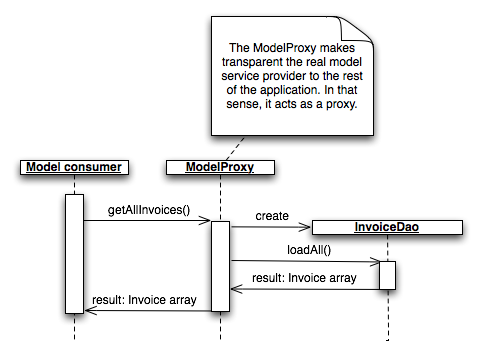

<table cellpadding="10" cellspacing="0" width="100%" border="0"><tr><td valign="top">
<div><a name=""></a><h1>The Model</h1>
  <div class="ref-purpose">Structuring the business logic</div>
 <div class="ref-synopsis"></div>
<h2>Table of Contents</h2>
<ul>

<a href="../Model/tutorial_Model.pkg.html#intro">What's the model?</a><br />

<a href="../Model/tutorial_Model.pkg.html#defining_model_services">Defining model services</a><br />

<a href="../Model/tutorial_Model.pkg.html#caching_capabilities">Caching capabilities</a><br />

<a href="../Model/tutorial_Model.pkg.html#protecting_services">Protecting services</a><br />

<a href="../Model/tutorial_Model.pkg.html#database_access">Persistence layer</a><br />
</ul>

 <p></p>
 <span><a name="intro"></a><h2>What's the model?</h2><p>The model is the piece within your application containing your business logic. Because is a good practice to separate your business logic from the rest of your application clearly, lion implements a Model-View-Controller pattern to ease the application structuration, where the Model become one of the 3 pieces within this pattern.</p>
  <div class="messagebox floatnote metadata plainlinks"><div class="floatnoteicon"></div><br><p>See the <a href="../Lion/tutorial_Lion.MVC.pkg.html">Model-View-Controller</a> section in order to know more about MVC pattern and how it's implemented in Lion</p></div>
  <p>We can find as part of the model layer the following classes:<br />
  <ul><li><strong>Your business classes</strong>: A set of value holder classes representing your business artifacts.</li>
    <li><strong>Your DAOs</strong>: Classes in charge of loading/saving your business objects from and to a storage engine (i.e. a database)</li>
    <li><strong>Your model services</strong>: Classes with the services that will be public from outside the model, representing the front-end to access to your model.</li>
    <li><strong>An ORM</strong>: A set of classes in charge of making transparent how business objects are persisted (i.e. making transparent the SQL usage by offering an API)</li>
    <li><strong>A database abstraction layer</strong>: A set of classes in charge of making transparent the concrete storage engine (i.e. the concrete database engine)</li></ul></p>
  <p>However, the model is not limited to those classes nor responsibilities, but to all the logic with a direct relationship to your business logic</p></span>
 <span><a name="defining_model_services"></a><h2>Defining model services</h2><p>Lion proposes a way to separate the model from the rest of the application: by defining a set of services working as a gateway to the model.<br />
  Those services are what we have known as <strong>model services</strong></p>
  <p>Model services are defined within the configuration, by specifying where to route each service call to a real model class.<br />
  i.e. We could define a set of model services and redirect them to a concrete Dao:
  <div class="listing"><pre><ol><li><div class="src-line"><span class="src-php">&lt;?</span><span class="src-id">xml&nbsp;version&nbsp;</span>=&nbsp;<span class="src-str">&quot;1.0&quot;&nbsp;</span><span class="src-id">standalone</span>=<span class="src-str">&quot;yes&quot;</span><span class="src-php">?&gt;</span></div></li>
<li><div class="src-line">&nbsp;</div></li>
<li><div class="src-line">&lt;configuration&gt;</div></li>
<li><div class="src-line">&nbsp;</div></li>
<li><div class="src-line">&nbsp;&nbsp;&lt;model-services&gt;</div></li>
<li><div class="src-line">&nbsp;</div></li>
<li><div class="src-line">&nbsp;&nbsp;&nbsp;&nbsp;&lt;!--&nbsp;Invoice&nbsp;services&nbsp;--&gt;</div></li>
<li><div class="src-line">&nbsp;&nbsp;&nbsp;&nbsp;&lt;class&nbsp;name=&quot;InvoiceDao&quot;&gt;</div></li>
<li><div class="src-line">&nbsp;&nbsp;&nbsp;&nbsp;&nbsp;&nbsp;&lt;service&nbsp;name&nbsp;=&nbsp;&quot;getAllInvoices&quot;&nbsp;class-method&nbsp;=&nbsp;&quot;loadAll&quot;/&gt;</div></li>
<li><div class="src-line">&nbsp;&nbsp;&nbsp;&nbsp;&nbsp;&nbsp;&lt;service&nbsp;name&nbsp;=&nbsp;&quot;getInvoice&quot;&nbsp;&nbsp;&nbsp;&nbsp;&nbsp;class-method&nbsp;=&nbsp;&quot;load&quot;/&gt;</div></li>
<li><div class="src-line">&nbsp;&nbsp;&nbsp;&nbsp;&nbsp;&nbsp;&lt;service&nbsp;name&nbsp;=&nbsp;&quot;saveInvoice&quot;&nbsp;&nbsp;&nbsp;&nbsp;class-method&nbsp;=&nbsp;&quot;save&quot;/&gt;</div></li>
<li><div class="src-line">&nbsp;&nbsp;&nbsp;&nbsp;&lt;/class&gt;</div></li>
<li><div class="src-line">&nbsp;&nbsp;&nbsp;&nbsp;</div></li>
<li><div class="src-line">&nbsp;&nbsp;&lt;/model-services&gt;</div></li>
<li><div class="src-line">&nbsp;&nbsp;</div></li>
<li><div class="src-line">&lt;/configuration&gt;</div></li>
</ol></pre></div>
  In this example, we are declaring some model services (getAllInvoices, getInvoice and saveInvoice) that will be routed to some <i>InvoiceDao</i> methods, to be concrete to <i>loadAll</i>, <i>load</i> and <i>save</i>.</p>
  <p>Continuing with our example, the Dao that we are talking about could be more like the following one:
  <div class="listing"><pre><ol><li><div class="src-line"><span class="src-php">&lt;?php</span></div></li>
<li><div class="src-line">&nbsp;</div></li>
<li><div class="src-line"><span class="src-key">class&nbsp;</span><span class="src-id">InvoiceDao&nbsp;</span><span class="src-sym">{</span></div></li>
<li><div class="src-line">&nbsp;</div></li>
<li><div class="src-line">&nbsp;&nbsp;&nbsp;&nbsp;<span class="src-key">public&nbsp;</span><span class="src-key">function&nbsp;</span><span class="src-id">loadAll</span><span class="src-sym">(</span><span class="src-sym">)&nbsp;</span><span class="src-sym">{</span></div></li>
<li><div class="src-line">&nbsp;&nbsp;&nbsp;&nbsp;&nbsp;&nbsp;&nbsp;&nbsp;...</div></li>
<li><div class="src-line">&nbsp;&nbsp;&nbsp;&nbsp;<span class="src-sym">}</span></div></li>
<li><div class="src-line">&nbsp;</div></li>
<li><div class="src-line">&nbsp;&nbsp;&nbsp;&nbsp;<span class="src-key">public&nbsp;</span><span class="src-key">function&nbsp;</span><span class="src-id">load</span><span class="src-sym">(</span><span class="src-var">$invoice_id</span><span class="src-sym">)&nbsp;</span><span class="src-sym">{</span></div></li>
<li><div class="src-line">&nbsp;&nbsp;&nbsp;&nbsp;&nbsp;&nbsp;&nbsp;&nbsp;...</div></li>
<li><div class="src-line">&nbsp;&nbsp;&nbsp;&nbsp;<span class="src-sym">}</span></div></li>
<li><div class="src-line">&nbsp;&nbsp;&nbsp;&nbsp;</div></li>
<li><div class="src-line">&nbsp;&nbsp;&nbsp;&nbsp;<span class="src-key">public&nbsp;</span><span class="src-key">function&nbsp;</span><span class="src-id">save</span><span class="src-sym">(</span><span class="src-id">Invoice&nbsp;</span><span class="src-var">$invoice</span><span class="src-sym">)&nbsp;</span><span class="src-sym">{</span></div></li>
<li><div class="src-line">&nbsp;&nbsp;&nbsp;&nbsp;&nbsp;&nbsp;&nbsp;&nbsp;...</div></li>
<li><div class="src-line">&nbsp;&nbsp;&nbsp;&nbsp;<span class="src-sym">}</span></div></li>
<li><div class="src-line">&nbsp;</div></li>
<li><div class="src-line"><span class="src-sym">}</span></div></li>
</ol></pre></div></p>
  <p>To call to a model service from outside the model layer, we'll use the <a href="../Model/__ModelProxy.html">__ModelProxy</a> instance (singleton).<br />
  i.e.:
  <div class="listing"><pre><ol><li><div class="src-line"><span class="src-php">&lt;?php</span></div></li>
<li><div class="src-line">&nbsp;</div></li>
<li><div class="src-line">&nbsp;&nbsp;&nbsp;&nbsp;<span class="src-comm">//retrieve&nbsp;all&nbsp;the&nbsp;invoices:</span></div></li>
<li><div class="src-line">&nbsp;&nbsp;&nbsp;&nbsp;<span class="src-var">$invoices&nbsp;</span>=&nbsp;<span class="src-id"><a href="../Model/__ModelProxy.html">__ModelProxy</a></span><span class="src-sym">::</span><a href="../Model/__ModelProxy.html#methodgetInstance">getInstance</a><span class="src-sym">(</span><span class="src-sym">)</span><span class="src-sym">-&gt;</span><span class="src-id">getAllInvoices</span><span class="src-sym">(</span><span class="src-sym">)</span><span class="src-sym">;</span></div></li>
<li><div class="src-line">&nbsp;&nbsp;&nbsp;&nbsp;</div></li>
<li><div class="src-line">&nbsp;&nbsp;&nbsp;&nbsp;<span class="src-comm">//retrieve&nbsp;a&nbsp;concrete&nbsp;invoice:</span></div></li>
<li><div class="src-line">&nbsp;&nbsp;&nbsp;&nbsp;<span class="src-var">$invoice&nbsp;&nbsp;</span>=&nbsp;<span class="src-id"><a href="../Model/__ModelProxy.html">__ModelProxy</a></span><span class="src-sym">::</span><a href="../Model/__ModelProxy.html#methodgetInstance">getInstance</a><span class="src-sym">(</span><span class="src-sym">)</span><span class="src-sym">-&gt;</span><span class="src-id">getInvoice</span><span class="src-sym">(</span><span class="src-var">$invoice_id</span><span class="src-sym">)</span><span class="src-sym">;</span></div></li>
<li><div class="src-line">&nbsp;&nbsp;&nbsp;&nbsp;</div></li>
<li><div class="src-line">&nbsp;&nbsp;&nbsp;&nbsp;<span class="src-comm">//save&nbsp;an&nbsp;invoice:</span></div></li>
<li><div class="src-line">&nbsp;&nbsp;&nbsp;&nbsp;<span class="src-id"><a href="../Model/__ModelProxy.html">__ModelProxy</a></span><span class="src-sym">::</span><a href="../Model/__ModelProxy.html#methodgetInstance">getInstance</a><span class="src-sym">(</span><span class="src-sym">)</span><span class="src-sym">-&gt;</span><span class="src-id">saveInvoice</span><span class="src-sym">(</span><span class="src-var">$invoice</span><span class="src-sym">)</span><span class="src-sym">;</span></div></li>
</ol></pre></div>
  The first advantage of this approach is the fact that we are hiding how the model is structured internally by just exposing some services to be consumed from the rest of layers.<br />
  In our example, we are calling to <i>getAllInvoices</i> by ignoring that our call will be routed to a DAO:</p>
    
  <p>Internally, the model proxy creates an <i>InvoiceDao</i> instance to call to his method. It also pass all the received parameters as them to return the received result.</p>
  <p>Lion also allows to route service calls to <strong>context instance</strong> methods. To do that, we can use the <i>instance</i> tag instead of the <i>class</i>:
  <div class="listing"><pre><ol><li><div class="src-line"><span class="src-php">&lt;?</span><span class="src-id">xml&nbsp;version&nbsp;</span>=&nbsp;<span class="src-str">&quot;1.0&quot;&nbsp;</span><span class="src-id">standalone</span>=<span class="src-str">&quot;yes&quot;</span><span class="src-php">?&gt;</span></div></li>
<li><div class="src-line">&nbsp;</div></li>
<li><div class="src-line">&lt;configuration&gt;</div></li>
<li><div class="src-line">&nbsp;</div></li>
<li><div class="src-line">&nbsp;&nbsp;&lt;model-services&gt;</div></li>
<li><div class="src-line">&nbsp;</div></li>
<li><div class="src-line">&nbsp;&nbsp;&nbsp;&nbsp;&lt;!--&nbsp;Invoice&nbsp;services&nbsp;--&gt;</div></li>
<li><div class="src-line">&nbsp;&nbsp;&nbsp;&nbsp;&lt;instance&nbsp;id=&quot;invoiceDao&quot;&gt;</div></li>
<li><div class="src-line">&nbsp;&nbsp;&nbsp;&nbsp;&nbsp;&nbsp;&lt;service&nbsp;name&nbsp;=&nbsp;&quot;getAllInvoices&quot;&nbsp;class-method&nbsp;=&nbsp;&quot;loadAll&quot;/&gt;</div></li>
<li><div class="src-line">&nbsp;&nbsp;&nbsp;&nbsp;&nbsp;&nbsp;&lt;service&nbsp;name&nbsp;=&nbsp;&quot;getInvoice&quot;&nbsp;&nbsp;&nbsp;&nbsp;&nbsp;class-method&nbsp;=&nbsp;&quot;load&quot;/&gt;</div></li>
<li><div class="src-line">&nbsp;&nbsp;&nbsp;&nbsp;&nbsp;&nbsp;&lt;service&nbsp;name&nbsp;=&nbsp;&quot;saveInvoice&quot;&nbsp;&nbsp;&nbsp;&nbsp;class-method&nbsp;=&nbsp;&quot;save&quot;/&gt;</div></li>
<li><div class="src-line">&nbsp;&nbsp;&nbsp;&nbsp;&lt;/instance&gt;</div></li>
<li><div class="src-line">&nbsp;&nbsp;&nbsp;&nbsp;</div></li>
<li><div class="src-line">&nbsp;&nbsp;&lt;/model-services&gt;</div></li>
<li><div class="src-line">&nbsp;&nbsp;</div></li>
<li><div class="src-line">&lt;/configuration&gt;</div></li>
</ol></pre></div>
  This is more like it could be done in a real project: Our DAOs have been initialized by dependency injection, so it's expected that they have been initialized with all their dependencies, i.e. the instance representing the database connection or the transaction manager to use:
  <div class="listing"><pre><ol><li><div class="src-line"><span class="src-php">&lt;?</span><span class="src-id">xml&nbsp;version&nbsp;</span>=&nbsp;<span class="src-str">&quot;1.0&quot;&nbsp;</span><span class="src-id">standalone</span>=<span class="src-str">&quot;yes&quot;</span><span class="src-php">?&gt;</span></div></li>
<li><div class="src-line">&lt;configuration&gt;</div></li>
<li><div class="src-line">&nbsp;</div></li>
<li><div class="src-line">&nbsp;&nbsp;&lt;context-instances&gt;</div></li>
<li><div class="src-line">&nbsp;</div></li>
<li><div class="src-line">&nbsp;&nbsp;&nbsp;&nbsp;&lt;context-instance&nbsp;id=&quot;invoiceDao&quot;&nbsp;class=&quot;InvoiceDao&quot;&gt;</div></li>
<li><div class="src-line">&nbsp;&nbsp;&nbsp;&nbsp;&nbsp;&nbsp;&nbsp;&nbsp;&lt;property&nbsp;name=&quot;connection&quot;&gt;&lt;ref&nbsp;id=&quot;localDbConnection&quot;/&gt;&lt;/property&gt;</div></li>
<li><div class="src-line">&nbsp;&nbsp;&nbsp;&nbsp;&lt;/context-instance&gt;</div></li>
<li><div class="src-line">&nbsp;</div></li>
<li><div class="src-line">&nbsp;&nbsp;&nbsp;&nbsp;&lt;context-instance&nbsp;id=&quot;localDbConnection&quot;&nbsp;class=&quot;DbConnection&quot;&gt;</div></li>
<li><div class="src-line">&nbsp;&nbsp;&nbsp;&nbsp;&nbsp;&nbsp;&lt;property&nbsp;name=&quot;dbName&quot;&gt;&lt;value&gt;myDb&lt;/value&gt;&lt;/property&gt;</div></li>
<li><div class="src-line">&nbsp;&nbsp;&nbsp;&nbsp;&nbsp;&nbsp;&lt;property&nbsp;name=&quot;dbEngine&quot;&gt;&lt;value&gt;mysql&lt;/value&gt;&lt;/property&gt;</div></li>
<li><div class="src-line">&nbsp;&nbsp;&nbsp;&nbsp;&nbsp;&nbsp;&lt;property&nbsp;name=&quot;dbHost&quot;&gt;&lt;value&gt;localhost&lt;/value&gt;&lt;/property&gt;</div></li>
<li><div class="src-line">&nbsp;&nbsp;&nbsp;&nbsp;&nbsp;&nbsp;&lt;property&nbsp;name=&quot;dbUser&quot;&gt;&lt;value&gt;myUser&lt;/value&gt;&lt;/property&gt;</div></li>
<li><div class="src-line">&nbsp;&nbsp;&nbsp;&nbsp;&nbsp;&nbsp;&lt;property&nbsp;name=&quot;dbPassword&quot;&gt;&lt;value&gt;secret&lt;/value&gt;&lt;/property&gt;</div></li>
<li><div class="src-line">&nbsp;&nbsp;&nbsp;&nbsp;&lt;/context-instance&gt;&nbsp;&nbsp;</div></li>
<li><div class="src-line">&nbsp;</div></li>
<li><div class="src-line">&nbsp;&nbsp;&lt;/context-instances&gt;</div></li>
<li><div class="src-line">&nbsp;&nbsp;</div></li>
<li><div class="src-line">&lt;/configuration&gt;</div></li>
</ol></pre></div></p>
  <center><div class="messagebox note metadata plainlinks"><table style="width:100%; background:none"><tr><td width="60"></td><td>To learn more about dependency injection in lion, see the <a href="../Context/tutorial_Context.DependencyInjection.pkg.html">Dependency Injection</a> section</td></tr></table></div></center></span>
 <span><a name="caching_capabilities"></a><h2>Caching capabilities</h2><p>Another advantage of using model services approach is the caching capability.<br />
  We can declare caching properties associated to model by using the <i>cache</i> and <i>cache-ttl</i> attributes at service level.<br />
  i.e.
  <div class="listing"><pre><ol><li><div class="src-line"><span class="src-php">&lt;?</span><span class="src-id">xml&nbsp;version&nbsp;</span>=&nbsp;<span class="src-str">&quot;1.0&quot;&nbsp;</span><span class="src-id">standalone</span>=<span class="src-str">&quot;yes&quot;</span><span class="src-php">?&gt;</span></div></li>
<li><div class="src-line">&nbsp;</div></li>
<li><div class="src-line">&lt;configuration&gt;</div></li>
<li><div class="src-line">&nbsp;</div></li>
<li><div class="src-line">&nbsp;&nbsp;&lt;model-services&gt;</div></li>
<li><div class="src-line">&nbsp;</div></li>
<li><div class="src-line">&nbsp;&nbsp;&nbsp;&nbsp;&lt;!--&nbsp;Invoice&nbsp;services&nbsp;--&gt;</div></li>
<li><div class="src-line">&nbsp;&nbsp;&nbsp;&nbsp;&lt;class&nbsp;name=&quot;InvoiceDao&quot;&gt;</div></li>
<li><div class="src-line">&nbsp;&nbsp;&nbsp;&nbsp;&nbsp;&nbsp;&lt;service&nbsp;name&nbsp;=&nbsp;&quot;getAllInvoices&quot;&nbsp;</div></li>
<li><div class="src-line">&nbsp;&nbsp;&nbsp;&nbsp;&nbsp;&nbsp;&nbsp;class-method&nbsp;=&nbsp;&quot;loadAll&quot;</div></li>
<li><div class="src-line">&nbsp;&nbsp;&nbsp;&nbsp;&nbsp;&nbsp;&nbsp;&nbsp;&nbsp;&nbsp;&nbsp;&nbsp;&nbsp;&nbsp;cache&nbsp;=&nbsp;&quot;true&quot;&nbsp;</div></li>
<li><div class="src-line">&nbsp;&nbsp;&nbsp;&nbsp;&nbsp;&nbsp;&nbsp;&nbsp;&nbsp;&nbsp;cache-ttl&nbsp;=&nbsp;&quot;300&quot;/&gt;</div></li>
<li><div class="src-line">&nbsp;&nbsp;&nbsp;&nbsp;&nbsp;&nbsp;&nbsp;&nbsp;&nbsp;&nbsp;</div></li>
<li><div class="src-line">&nbsp;&nbsp;&nbsp;&nbsp;&nbsp;&nbsp;&lt;service&nbsp;name&nbsp;=&nbsp;&quot;getInvoice&quot;&nbsp;</div></li>
<li><div class="src-line">&nbsp;&nbsp;&nbsp;&nbsp;&nbsp;&nbsp;&nbsp;class-method&nbsp;=&nbsp;&quot;load&quot;&nbsp;</div></li>
<li><div class="src-line">&nbsp;&nbsp;&nbsp;&nbsp;&nbsp;&nbsp;&nbsp;&nbsp;&nbsp;&nbsp;&nbsp;&nbsp;&nbsp;&nbsp;cache&nbsp;=&nbsp;&quot;true&quot;&nbsp;</div></li>
<li><div class="src-line">&nbsp;&nbsp;&nbsp;&nbsp;&nbsp;&nbsp;&nbsp;&nbsp;&nbsp;&nbsp;cache-ttl&nbsp;=&nbsp;&quot;60&quot;/&gt;</div></li>
<li><div class="src-line">&nbsp;&nbsp;&nbsp;&nbsp;&nbsp;&nbsp;</div></li>
<li><div class="src-line">&nbsp;&nbsp;&nbsp;&nbsp;&nbsp;&nbsp;&lt;service&nbsp;name&nbsp;=&nbsp;&quot;saveInvoice&quot;&nbsp;class-method&nbsp;=&nbsp;&quot;save&quot;/&gt;</div></li>
<li><div class="src-line">&nbsp;&nbsp;&nbsp;&nbsp;&lt;/class&gt;</div></li>
<li><div class="src-line">&nbsp;&nbsp;&nbsp;&nbsp;</div></li>
<li><div class="src-line">&nbsp;&nbsp;&lt;/model-services&gt;</div></li>
<li><div class="src-line">&nbsp;&nbsp;</div></li>
<li><div class="src-line">&lt;/configuration&gt;</div></li>
</ol></pre></div>
  In this example, we are caching the <i>getAllInvoices</i> service to expire after 300 seconds (ttl), as well as the <i>getInvoices</i> with a ttl of 1 minute</p>
  <center><div class="messagebox note metadata plainlinks"><table style="width:100%; background:none"><tr><td width="60"></td><td>Use cache capabilities in model services designed just to return results without altering the model.<br />
        Take into account that a cached service won't be executed itself.</td></tr></table></div></center>
  <p>The <i>cache-ttl</i>is optional, being 0 by default, forcing the cache to never expire</p></span>
 <span><a name="protecting_services"></a><h2>Protecting services</h2><p>We can also protect some of our model services by assigning permissions.<br />
  i.e. we could force the security layer to check that the user in session has a concrete permission to be able to call the <i>saveInvoice</i> service:
  <div class="listing"><pre><ol><li><div class="src-line"><span class="src-php">&lt;?</span><span class="src-id">xml&nbsp;version&nbsp;</span>=&nbsp;<span class="src-str">&quot;1.0&quot;&nbsp;</span><span class="src-id">standalone</span>=<span class="src-str">&quot;yes&quot;</span><span class="src-php">?&gt;</span></div></li>
<li><div class="src-line">&nbsp;</div></li>
<li><div class="src-line">&lt;configuration&gt;</div></li>
<li><div class="src-line">&nbsp;</div></li>
<li><div class="src-line">&nbsp;&nbsp;&lt;model-services&gt;</div></li>
<li><div class="src-line">&nbsp;</div></li>
<li><div class="src-line">&nbsp;&nbsp;&nbsp;&nbsp;&lt;!--&nbsp;Invoice&nbsp;services&nbsp;--&gt;</div></li>
<li><div class="src-line">&nbsp;&nbsp;&nbsp;&nbsp;&lt;instance&nbsp;id=&quot;invoiceDao&quot;&gt;</div></li>
<li><div class="src-line">&nbsp;&nbsp;&nbsp;&nbsp;&nbsp;&nbsp;&lt;service&nbsp;name&nbsp;=&nbsp;&quot;getAllInvoices&quot;&nbsp;class-method&nbsp;=&nbsp;&quot;loadAll&quot;/&gt;</div></li>
<li><div class="src-line">&nbsp;&nbsp;&nbsp;&nbsp;&nbsp;&nbsp;&lt;service&nbsp;name&nbsp;=&nbsp;&quot;getInvoice&quot;&nbsp;&nbsp;&nbsp;&nbsp;&nbsp;class-method&nbsp;=&nbsp;&quot;load&quot;/&gt;</div></li>
<li><div class="src-line">&nbsp;&nbsp;&nbsp;&nbsp;&nbsp;&nbsp;&lt;!--&nbsp;Need&nbsp;the&nbsp;SAVE_INVOICES_PERMISSION&nbsp;to&nbsp;call&nbsp;to&nbsp;this&nbsp;service:&nbsp;--&gt;</div></li>
<li><div class="src-line">&nbsp;&nbsp;&nbsp;&nbsp;&nbsp;&nbsp;&lt;service&nbsp;name&nbsp;=&nbsp;&quot;saveInvoice&quot;&nbsp;&nbsp;&nbsp;&nbsp;class-method&nbsp;=&nbsp;&quot;save&quot;&gt;</div></li>
<li><div class="src-line">&nbsp;&nbsp;&nbsp;&nbsp;&nbsp;&nbsp;&nbsp;&nbsp;&lt;permission&nbsp;id=&quot;SAVE_INVOICES_PERMISSION&quot;/&gt;</div></li>
<li><div class="src-line">&nbsp;&nbsp;&nbsp;&nbsp;&nbsp;&nbsp;&lt;/service&gt;</div></li>
<li><div class="src-line">&nbsp;&nbsp;&nbsp;&nbsp;&lt;/instance&gt;</div></li>
<li><div class="src-line">&nbsp;&nbsp;&nbsp;&nbsp;</div></li>
<li><div class="src-line">&nbsp;&nbsp;&lt;/model-services&gt;</div></li>
<li><div class="src-line">&nbsp;&nbsp;</div></li>
<li><div class="src-line">&lt;/configuration&gt;</div></li>
</ol></pre></div></p>
  <center><div class="messagebox note metadata plainlinks"><table style="width:100%; background:none"><tr><td width="60"></td><td>To learn more about the security layer, see the <a href="../Security/tutorial_Security.pkg.html">Security in Lion</a> section</td></tr></table></div></center></span>
 <span><a name="database_access"></a><h2>Persistence layer</h2><p>There are more like hundred of elegant approaches to equip our model with persistence capabilities. However, lion does not implement any of them :)<br />
  Why? The answer is clear: Because there are more like hundred of frameworks to do that out there.</p>
  <p>What Lion provides is an easy way to integrate them as part of the model layer.<br />
  See the <a href="../Model/tutorial_ORM.pkg.html">Integrating an ORM</a> section to learn how to integrate an ORM, which is a good example to know about those integration capabilities</p></span></div>
      </td></tr></table>